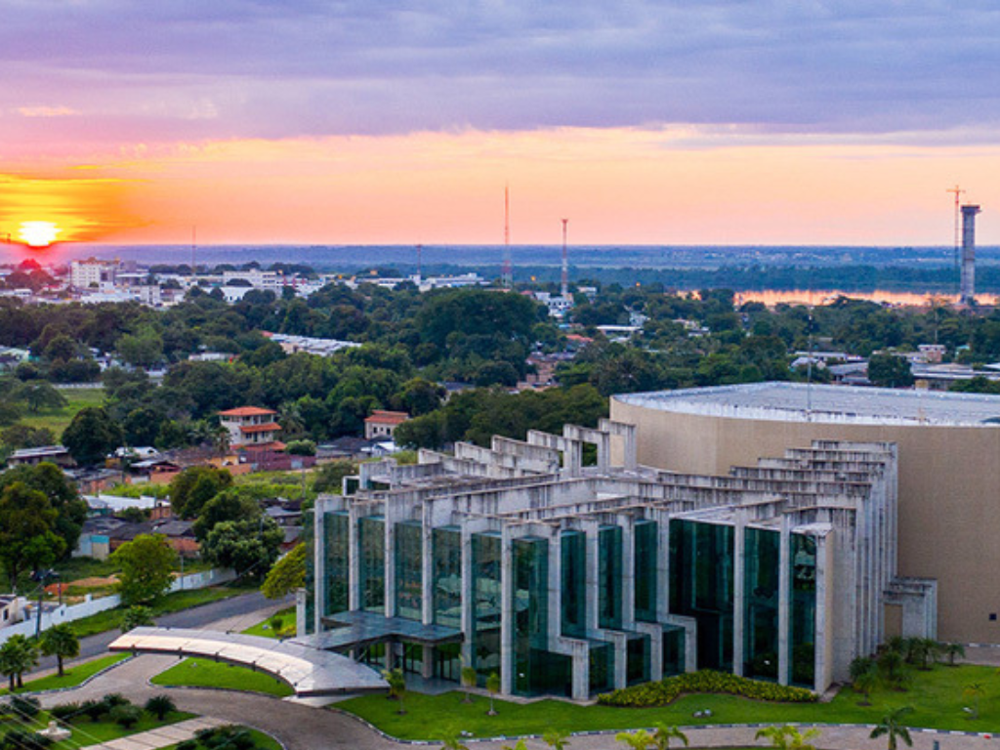

Roraima é o estado mais ao norte do Brasil e faz fronteira com a Venezuela e a Guiana, sendo conhecido por suas paisagens naturais impressionantes e rica diversidade cultural. Sua capital, Boa Vista, é a única capital brasileira totalmente localizada no hemisfério norte. A economia de Roraima é baseada na agropecuária, no comércio e no setor público, além do potencial para o turismo ecológico. O estado abriga importantes áreas de preservação ambiental, como o Monte Roraima e extensas terras indígenas, incluindo a Terra Indígena Raposa Serra do Sol. Com forte influência indígena e grande presença da floresta amazônica e do lavrado, Roraima possui uma identidade cultural única dentro da região Norte do país.
